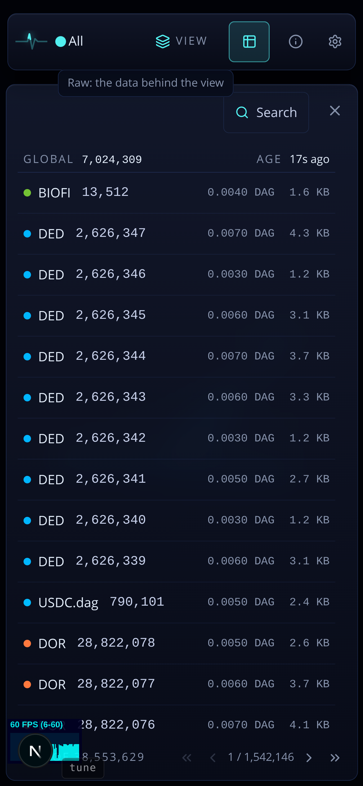

Two asks: a row should look tappable (it opens the snapshot's page), and the GLOBAL header row should be clearly different from the metagraph rows under it. The selection fix you asked for (only the selected row carries the edge) is already built; it is drawn here as part of each option.

Fee and size keep their right edge; the chevron takes 14px plus a gap from the space between the ordinal and the fee (DOR's 10-digit ordinals still fit at 390px). Today a tap on the global header only selects it (the page opens for metagraph snapshots only); that stays.